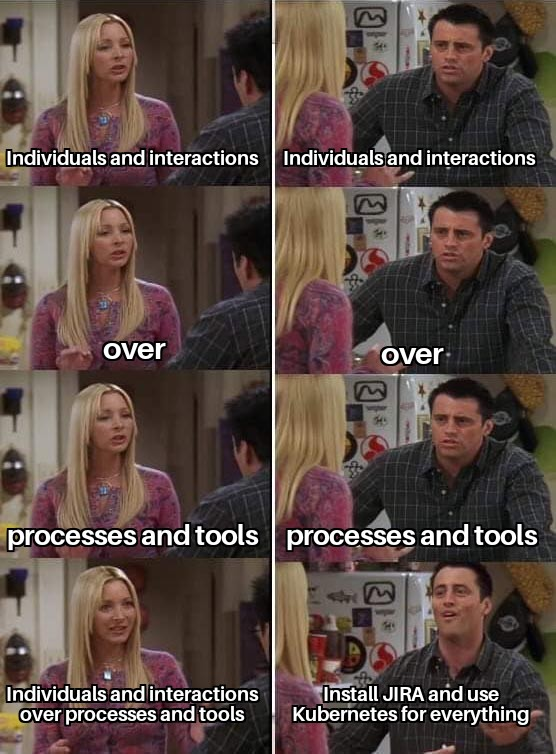

this declaration may be freely copied in any form,
but only in its entirety through this notice.
Twelve Principles of Agile Software
View Signatories
About the Authors
About the Manifesto
Afrikaans
Albanian
Amharic
عربي
Azərbaycanca
Беларуская
Bosanski
Български
Català
Česky
Deutsch
Dansk
Ελληνικά
English
Español
Eesti
Euskara
Suomi
Français
Gaeilge
Gàidhlig
Galician
Galego
ქართული
עברית
हिंदी
Croatian/Hrvatski
Hungarian/Magyar
Bahasa Indonesia
Íslenska
Italiano
日本語
ខ្មែរ
한국어
Latviešu
Lietuvių
Македонски/Macedonian
Bahasa Melayu
မြန်မာစာ
नेपाली
Nederlands
Norsk
ଓଡ଼ିଆ
ਪੰਜਾਬੀ
Polski
فارسی
Português Brasileiro
Português Portugal
Română
Русский
සිංහල
Slovenščina
Slovensky
संस्कृत
Srpski
Svenska
Swahili
தமிழ்
తెలుగు
ภาษาไทย
Filipino
Türkçe
Xitsonga
Українська
اردو
Yoruba
繁體中文
简体中文
this is not the "Agile Manifesto"